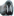

Master index
Index for eidors\algorithms\t_dai
Index for eidors\algorithms\t_dai
Matlab files in this directory:

calc_covar_prior
CALC_COVAR_PRIOR image prior with distance-based interelement covar
fourD_prior_solve
fourD_prior_solve-- inverse solver to account for temporal
Generated on Thu 03-Mar-2011 21:35:57 by
m2html
© 2005
 Master index
Master index Master index
Master index